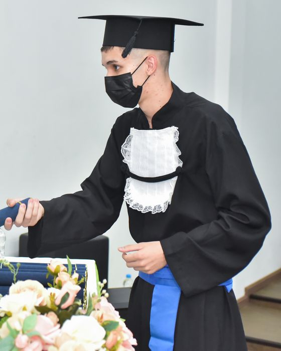

Infraestrutura
com energiaServidores, acessos, acesso remoto e rede, com foco em estabilidade, padronização e suporte que não deixa nada parado.
Servidores Windows, RDS, rede, backup, e-mail corporativo
Cuido de infraestrutura, dados e automação para a TI não parar e ninguém precisar repetir tarefa à mão.
Bacharel em Ciência da Computação, técnico em eletromecânica e fundador da Boontry Networks.
Quadro de serviços
3 de 3 circuitos com energia
Tudo ligado. É assim que eu gosto de deixar.
Experimente desligar um circuito.
Comecei pela eletromecânica, no IFSC, e levei para a computação o hábito de seguir esquema, padronizar e documentar. Hoje atuo em TI corporativa: infraestrutura sólida, dados que viram decisão e rotinas que rodam sozinhas.
Também toco a Boontry Networks, onde levo essas mesmas soluções para outras empresas.
Tenho perfil prático e organizado. Da infraestrutura ao produto final, minha régua é a mesma: resolver com o mínimo necessário e manter funcionando.
Três frentes que dependem uma da outra: a infraestrutura sustenta, os dados mostram o que está acontecendo e a automação tira o trabalho repetido do caminho.
Servidores, acessos, acesso remoto e rede, com foco em estabilidade, padronização e suporte que não deixa nada parado.
Servidores Windows, RDS, rede, backup, e-mail corporativo
SQL Server, views e relatórios que transformam dados soltos em indicadores e decisões mais rápidas.
SQL Server, views, relatórios em Excel, indicadores
Integração e automação de rotinas para eliminar tarefa repetida e liberar tempo para o que importa.
Integrações, etiquetas, XML de nota fiscal, WhatsApp
No dia a dia: Windows Server, SQL Server, Excel, Python, React e Git.
IFSC, São Miguel do Oeste. A base de tudo: elétrica, mecânica, esquema e norma.

UNOESC, São Miguel do Oeste. Concluído.
Em andamento, na área de TI: infraestrutura, dados e gestão de tecnologia.
Aberto a oportunidades e projetos. Respondo mais rápido pelo WhatsApp.